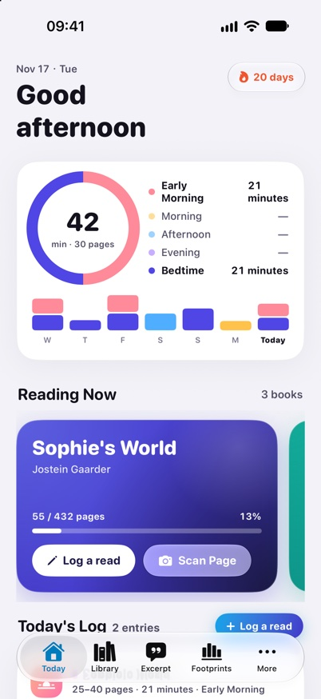
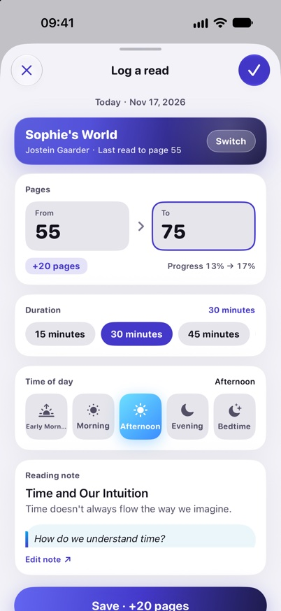
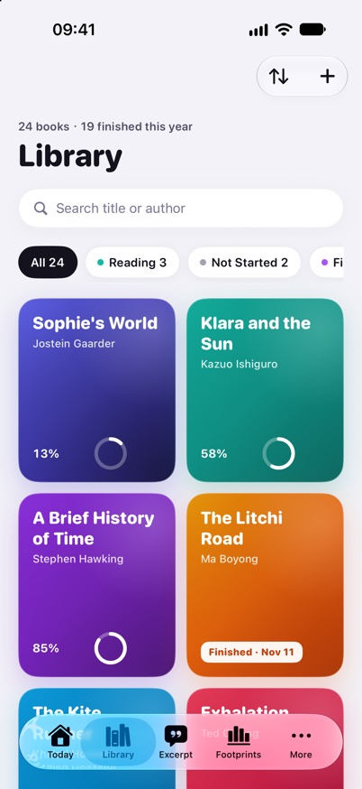
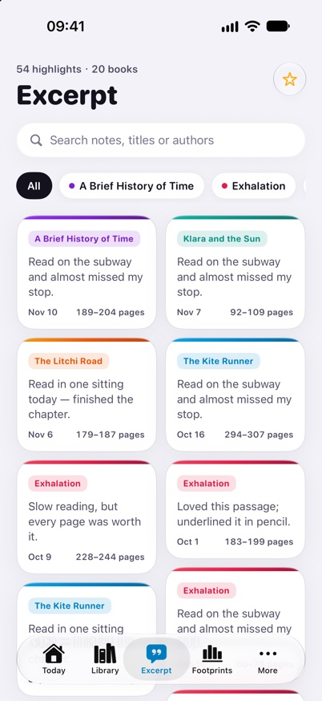
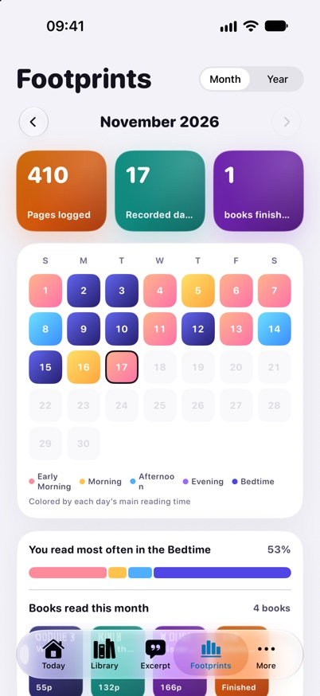

INTERLEAF · PRISM
Every page,
in full spectrum.
Remember which page you reached, what time of day you read, and the lines you wanted to keep. Your books, reading spectrum, excerpts, and calendar come together in one calm journal.
iOS 26+ · Available on the App Store
Screenshots show the Prism release UI with demo data. Features match the latest release in your region.

01 / Log in Moments
Read for a bit,
log it in seconds.
No timers to start and no daily quotas to chase. Tap "Log a read" from Today or any book card—the form lights up in that book's own color.
- Book & pages
Starts from your last recorded page—just enter where you stopped.
- Duration & time of day
Pick a duration and one of five reading times (Early Morning to Bedtime), or skip both.
- Notes & page scan
Write a thought, snap a book page, or extract quotes with on-device text recognition.


02 / Color-Coded Library
Every book,
in its own color.
Choose a gradient color for every title and keep All, Reading, Not Started, and Finished books neatly organized with instant search.
Open any book to see its immersive header, 3-week reading rhythm, timeline of logs, or mark it finished.
03 / Excerpts & Footprints
Keep the lines that stay.
See every day in color.
Browse all rich-text notes and scanned pages on the Excerpt wall with book filters and search, while Echoes on Today surfaces a random past note.
Footprints paints your monthly calendar by each day's main reading time, shows annual spectrum bands, and powers "Continue Reading," "Today's Spectrum," and "Reading Band" widgets.


Your Records Stay Yours
Private by default.
Portable anytime.
Stored on device
No Interleaf account required. Page scanning OCR runs on-device without uploading pages to third-party services.
Optional iCloud
Enable iCloud sync in settings to sync via your own Apple account. Widgets only read page and minute summaries—never notes.
Take everything with you
Export full .dujibackup archives with books, logs, rich notes, and attachments, or import and export reading logs via Excel.